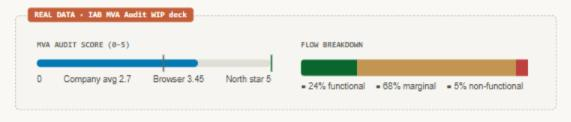
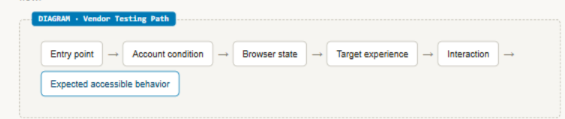
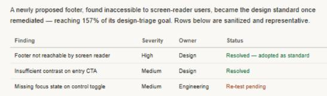

I build operating models
Turning regulatory exposure into an accessibility program
My accessibility and regulatory subject-matter expertise helped the team recognize that a browser serving billions of users was newly in scope of the European Accessibility Act — and I co-led the work that moved the team toward compliance readiness and an ongoing accessibility program.
Problem: The browser was newly in scope of the EAA but had never had a formal accessibility review. Outcome: The team reached compliance readiness ahead of enforcement and hit 157% of its remediation goal.
Featured artifact
Accessibility health snapshot

Impact snapshot
Accessibility program impact snapshot
My involvement
Recognizing the risk, defining the testable system, and co-leading the response
Role
Content Design accessibility lead and regulatory subject-matter expert, co-leading a cross-functional v-team spanning Design, Content Design, Engineering, and Program Management.
Scope
Priority in-app browser experiences across entry points, account conditions, platforms, and interaction paths — plus the regulatory question of whether the European Accessibility Act applied at all.
Contribution
Helped confirm the browser was in scope of the EAA, mapped the flows that became the audit’s test scope, co-led the response, and turned findings into a lasting remediation model.
The challenge
A global browser was newly exposed to regulatory requirements, but it had never undergone a formal accessibility review.
The European Accessibility Act took effect in June 2025. Meta’s in-app browser served billions of users, but accessibility had not yet been established as a strategic priority for the team and the product had never undergone a formal review.
A minimum viable accessibility audit confirmed that the exposure was real: the browser scored 3.45 out of 5, classifying it as marginally functional. The team needed more than a list of issues. It needed a reliable way to define test scope, let vendors reproduce complex flows, assign ownership, remediate findings, and validate fixes.
The approach
I helped turn an ambiguous compliance question into a testable, accountable program.
01
I helped bring the regulatory exposure into focus.
Using subject-matter expertise in the regulations behind the EAA, I helped Product Counsel confirm that the browser was in scope. I then mapped the browser’s user flows, which became the practical scope of the third-party audit.
02
I co-led the program that made the product testable and fixable.
I co-led the cross-functional v-team, created vendor-ready test accounts and navigation paths that let outside auditors reproduce each flow, ran alignment workshops, and kept testers unblocked throughout the audit.

03
I turned findings into standards, not just a list.
A newly proposed footer design was found inaccessible to screen-reader users, blocking high-value promotional content before it shipped. The remediated pattern became the design standard going forward, and the team’s remediation effort reached 157% of its design-triage goal.

Impact
The browser reached compliance readiness before enforcement, and the response became an ongoing program.
The work also helped secure leadership sponsorship and funding for a dedicated, ongoing accessibility initiative, and the recommended accessible footer pattern became the design standard for future development.
Reflection
The visible output may be a list of issues. The deeper work is creating the system that lets teams find and fix them consistently.
Recognizing the regulatory stakes early created time to build the map, accountability, and process before the deadline made action urgent.
“Accessibility work is systems work — and sometimes it is risk management, too.”